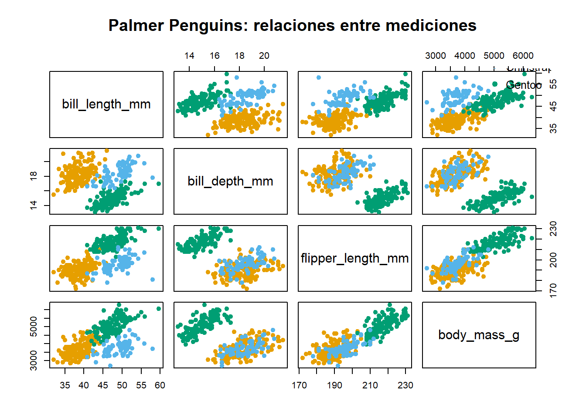
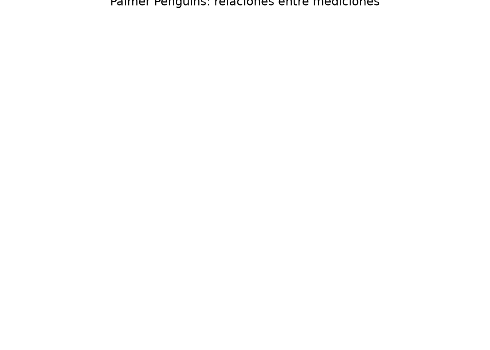
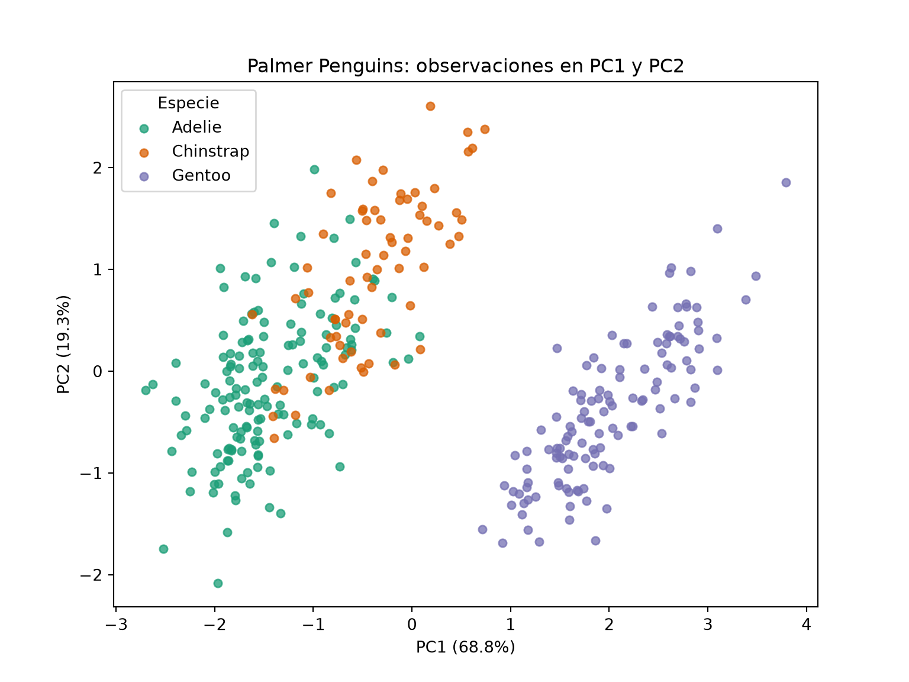
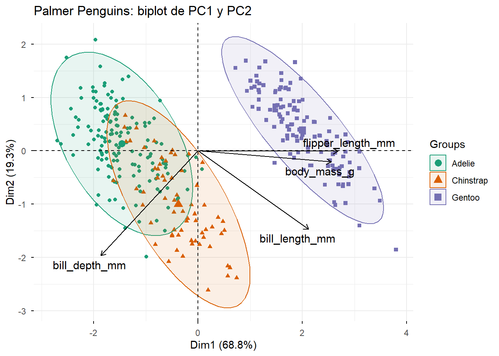
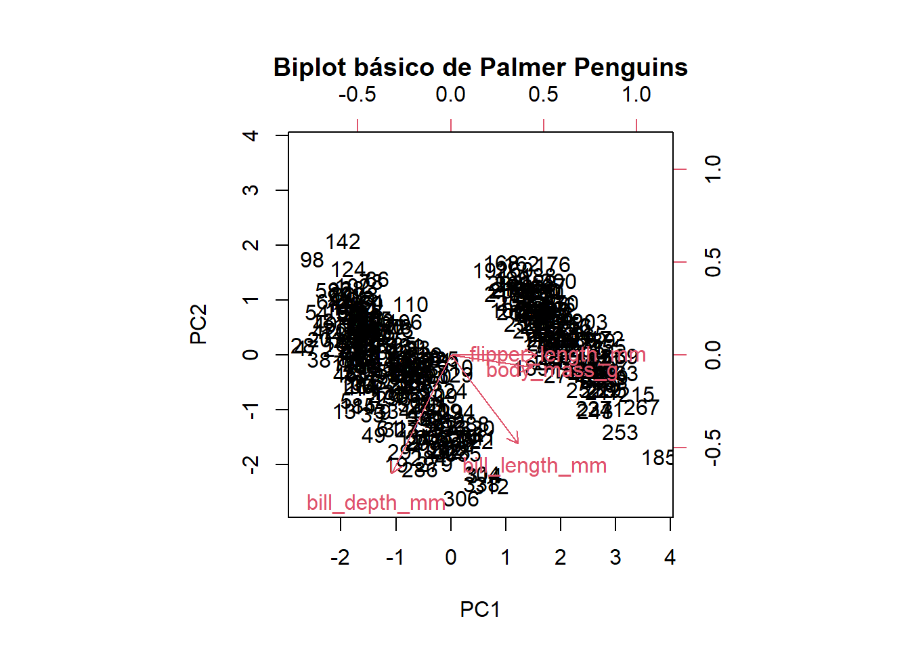
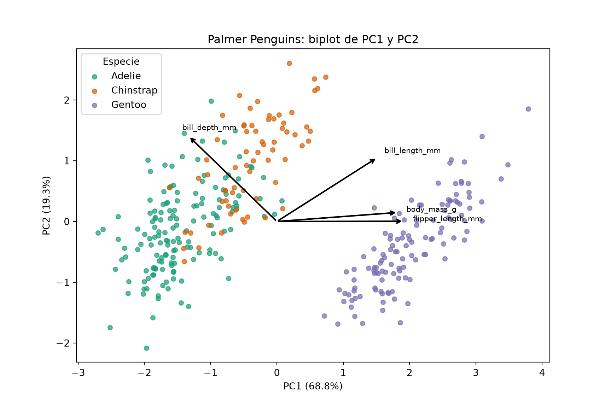
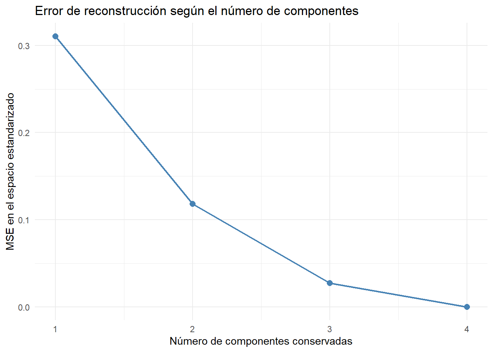
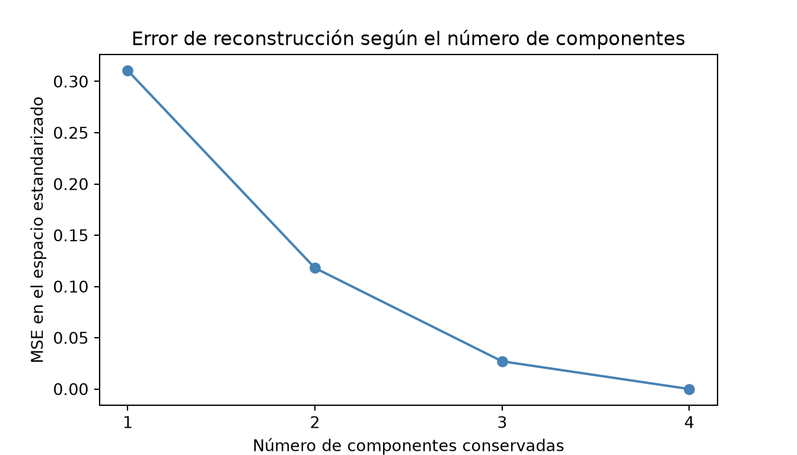

Una observación puede describirse por varias características relacionadas. En datos ecológicos, por ejemplo, los individuos de mayor tamaño pueden presentar simultáneamente mayor masa corporal y aletas más largas. Visualizar pares de variables ayuda, pero no resume todas sus relaciones.
Si tenemos \(n\) individuos y \(p\) variables cuantitativas, organizamos los datos en \(X\in\mathbb{R}^{n\times p}\). El análisis de componentes principales (PCA) construye nuevas coordenadas como combinaciones lineales de las variables originales, de modo que las primeras capturen la mayor varianza posible.
PCA no utiliza etiquetas de clase y no es un algoritmo de agrupamiento. Una representación bidimensional puede revelar patrones, pero no demuestra por sí sola que existan grupos bien separados.
Advertencia🧠 Preguntas
¿Cuál es la diferencia entre centrar y estandarizar una variable?
¿Por qué la masa en gramos podría dominar un análisis que también incluye longitudes en milímetros?
¿Qué información podría resultar redundante cuando dos variables están muy correlacionadas?
18.2 Interpretación geométrica y matemática
Sea \(X_c\) la matriz de datos centrados por columna. Elegimos una dirección unitaria \(\mathbf v\in\mathbb R^p\) y proyectamos las observaciones sobre ella:
Como la matriz de covarianzas muestral es \(S=X_c^\top X_c/(n-1)\), tenemos
\[ \operatorname{Var}(X_c\mathbf v)=\mathbf v^\top S\mathbf v. \]
Las direcciones principales son autovectores de \(S\) ordenados según sus autovalores \(\lambda_1\geq\lambda_2\geq\cdots\geq0\). La segunda dirección maximiza la varianza entre las direcciones ortogonales a la primera, y así sucesivamente.
ImportanteTres objetos diferentes
Loadings o cargas: coeficientes de las variables originales que definen cada dirección principal. En R aparecen en rotation; en Python, en components_ (con las componentes en filas).
Scores o puntuaciones: coordenadas de cada individuo en el nuevo sistema. En R aparecen en x; en Python se obtienen con transform() o fit_transform().
Varianza explicada: fracción \(\lambda_k/\sum_j\lambda_j\) de la variabilidad total asociada a la componente \(k\).
18.2.1 Un ejemplo para interpretar sin cuentas largas
Considera \(A=(1,1)\), \(B=(2,2)\) y \(C=(3,3)\). La media es \((2,2)\) y las observaciones centradas son \((-1,-1)\), \((0,0)\) y \((1,1)\). Toda la variación está en la dirección \(\mathbf v_1=(1,1)/\sqrt{2}\); la dirección ortogonal \(\mathbf v_2=(-1,1)/\sqrt{2}\) tiene varianza cero. Por tanto, una componente resume exactamente estos datos.
18.3 Nuestro conjunto de datos: Palmer Penguins
Estudiaremos mediciones morfológicas de pingüinos del archipiélago Palmer. Consideraremos cuatro variables cuantitativas:
Variable original
Significado
Unidad
bill_length_mm
Longitud del pico
mm
bill_depth_mm
Profundidad del pico
mm
flipper_length_mm
Longitud de la aleta
mm
body_mass_g
Masa corporal
g
La variable species servirá solamente para colorear e interpretar algunas gráficas; no participará en el cálculo de PCA. Los datos también incluyen otras variables, como isla y sexo, que no incorporaremos al análisis inicial.
18.3.1 Preparación de datos y valores faltantes
Primero seleccionamos las columnas y eliminamos únicamente los registros incompletos en las cuatro mediciones. No eliminamos observaciones por su especie.
Código
# Instalar una sola vez en la consola de R, si hace falta:# install.packages(c("palmerpenguins", "reticulate"))library(palmerpenguins)
Adjuntando el paquete: 'palmerpenguins'
The following objects are masked from 'package:datasets':
penguins, penguins_raw
Código
variables <-c("bill_length_mm", "bill_depth_mm","flipper_length_mm", "body_mass_g")penguins_clean <-as.data.frame(palmerpenguins::penguins[, c("species", variables)])# Conservamos solo datos completos, es decir sin NApenguins_clean <- penguins_clean[complete.cases(penguins_clean[, variables]), ]penguins_clean$species <-as.character(penguins_clean$species)row.names(penguins_clean) <-NULLX_r <- penguins_clean[, variables]especie_r <- penguins_clean$speciescat("Dimensiones de la matriz numérica:", dim(X_r), "\n")
La pestaña Python carga los datos directamente con el paquete palmerpenguins. No depende de los objetos creados en R. Para ejecutarla, instala una sola vez palmerpenguins en el entorno de Python.
PCA clásico requiere una matriz numérica. Incluir species como si fuera una medida introduciría artificialmente la información que luego queremos observar en la figura. Las variables categóricas requieren otros tratamientos y no deben codificarse con números arbitrarios para este PCA.
# Resumen estadístico de las variablessummary(X_r)
bill_length_mm bill_depth_mm flipper_length_mm body_mass_g
Min. :32.10 Min. :13.10 Min. :172.0 Min. :2700
1st Qu.:39.23 1st Qu.:15.60 1st Qu.:190.0 1st Qu.:3550
Median :44.45 Median :17.30 Median :197.0 Median :4050
Mean :43.92 Mean :17.15 Mean :200.9 Mean :4202
3rd Qu.:48.50 3rd Qu.:18.70 3rd Qu.:213.0 3rd Qu.:4750
Max. :59.60 Max. :21.50 Max. :231.0 Max. :6300
Código
# Matriz de correlacionescor.mat <-cor(X_r)round(cor.mat, 2)
# Gráficos de dispersión entre pares de variables# Colores según la especieespecies <-factor(penguins_clean$species)colores <-c("Adelie"="#E69F00","Chinstrap"="#56B4E9","Gentoo"="#009E73")# Matriz de gráficos de dispersiónpairs( X_r,col = colores[as.character(especies)],pch =19,main ="Palmer Penguins: relaciones entre mediciones")# Leyendalegend("topright",legend =names(colores),col = colores,pch =19,bty ="n",cex =0.8)

Código
# Visualización de la matriz de correlacionescorrplot( cor.mat,method ="color",type ="upper",order ="original",addCoef.col ="black",tl.col ="black",tl.srt =45,number.cex =0.8)
plt.suptitle("Palmer Penguins: relaciones entre mediciones", y=1.01)plt.tight_layout()plt.show()

Advertencia🧠 Pregunta
¿qué pares de variables parecen asociados? ¿Cuál tiene mayor magnitud numérica? ¿Sería razonable que una variable medida en gramos dominara el PCA sin estandarizar?
18.4 PCA con datos centrados, sin estandarizar
Centrar significa restar la media de cada variable. En este primer análisis conservaremos las unidades originales, para observar su efecto.
En R utilizaremos prcomp() del paquete stats para realizar el análisis de componentes principales. La función obtiene las direcciones principales mediante descomposición en valores singulares (SVD), aplicada a los datos centrados y, cuando corresponde, estandarizados.
Matriz numérica o data.frame: filas = observaciones y columnas = variables.
center
Resta la media de cada variable si es TRUE (valor predeterminado).
scale.
Divide las variables centradas entre sus desviaciones estándar muestrales si es TRUE; por defecto es FALSE.
rank.
Limita el número máximo de componentes calculadas.
tol
Permite descartar componentes de magnitud muy pequeña según una tolerancia relativa.
retx
Si es TRUE, conserva las coordenadas de las observaciones en las componentes (scores).
Primero calcularemos PCA sin estandarizar. Solo restamos las medias, de manera que las unidades y las diferencias de escala permanecen. En Penguins, la masa corporal está medida en gramos y las longitudes en milímetros: sus varianzas numéricas no son directamente comparables.
Para interpretar: observa los coeficientes de body_mass_g en pca_raw_r$rotation. ¿La primera componente resume equilibradamente las mediciones morfológicas o está dominada por la variación numérica de la masa corporal?
18.5 PCA después de estandarizar
Para evitar que las unidades de medición determinen qué variables dominan el análisis, podemos centrar y estandarizar cada variable:
\[
z_{ij}=\frac{x_{ij}-\bar{x}_j}{s_j},
\]
donde \(\bar{x}_j\) es la media y \(s_j\) la desviación estándar muestral de la variable \(j\). Así, las variables transformadas tienen media cero y varianza muestral uno. Realizar PCA con estas variables equivale a obtener las direcciones principales de la matriz de correlaciones.
NotaComparabilidad exacta entre R y Python
scale() y prcomp(scale. = TRUE) utilizan la desviación estándar muestral (denominador \(n-1\)). StandardScaler() utiliza por defecto la desviación con denominador \(n\). Para comparar scores y varianzas numéricamente con mayor claridad, aquí estandarizamos en Python usando X_py.std(ddof=1), como en R. Las direcciones principales no cambian por ese factor global de escala.
Si R devuelve una dirección principal \(\mathbf{a}_k\) y Python devuelve \(-\mathbf{a}_k\), ambos resultados representan el mismo eje. El cambio de signo también afecta las puntuaciones de esa componente, pero no su varianza explicada.
18.6 ¿Cómo interpretamos los resultados de prcomp()?
El objeto pca_r guarda la información necesaria para interpretar el análisis. La función summary(pca_r) presenta las desviaciones estándar de las componentes, la proporción de varianza explicada y la proporción acumulada.
Resultado
Contenido
Interpretación
pca_r$sdev
Desviaciones estándar de las componentes.
Su cuadrado es la varianza de cada componente, es decir, el autovalor \(\eta_k\).
pca_r$rotation
Matriz \(A\) de direcciones principales.
Sus columnas son los vectores \(\mathbf{a}_k\) que definen las componentes.
pca_r$x
Matriz \(T\) de puntuaciones (scores).
Sus filas indican las coordenadas de los pingüinos en el nuevo espacio.
pca_r$center
Medias usadas para centrar.
Valores restados a las variables originales.
pca_r$scale
Factores usados para escalar.
Aquí son las desviaciones estándar muestrales, porque scale. = TRUE.
Las filas de rotation corresponden a las variables originales y las columnas a las componentes principales. Cada columna es un vector unitario y las columnas son ortogonales entre sí.
Con cuatro variables estandarizadas, la primera componente se escribe como
Los coeficientes \(a_{j1}\) son los elementos de la primera columna de rotation. Sus magnitudes ayudan a interpretar qué variables intervienen más en la dirección; los signos describen su relación dentro de esa componente. Estos coeficientes no son, en general, las correlaciones entre las variables originales y las componentes.
Las puntuaciones son las coordenadas de las observaciones después de proyectarlas sobre las direcciones principales. Si \(Z\) es la matriz de datos estandarizados, \(A\) es la matriz de direcciones y \(T\) es la matriz de puntuaciones, entonces
\[
T=ZA.
\]
Por tanto, rotation describe cómo se construyen los nuevos ejes y x describe dónde se ubica cada observación en esos ejes.
Como PCA ordena las componentes de mayor a menor varianza, se cumple \(\eta_1\geq\eta_2\geq\cdots\). Los valores de center y scale documentan la transformación aplicada y permiten transformar nuevas observaciones de forma consistente.
18.7 ¿Cuánta varianza explican las componentes?
La proporción de varianza explicada por la componente \(k\) y la proporción acumulada de las primeras \(q\) componentes son
En R obtenemos los autovalores elevando al cuadrado pca_r$sdev. El scree plot muestra la varianza explicada por cada componente, mientras que la curva acumulada ayuda a decidir cuántas conservar. No existe un umbral universal: la decisión depende del objetivo del análisis.
¿Qué diferencias observas entre PCA sin estandarizar y PCA estandarizado?
¿Qué representa cada columna de pca_r$rotation y cada fila de pca_r$x?
¿Qué relación existe entre pca_r$sdev, los autovalores \(\eta_k\) y la varianza explicada?
¿Qué porcentaje de varianza conservamos con PC1 y PC2? ¿Es suficiente para el objetivo de visualización?
18.8 Visualización de las observaciones: scores
Una vez ajustado PCA, podemos representar las observaciones en el espacio definido por las componentes principales. La matriz de puntuaciones (scores) se obtiene mediante
\[
T=ZA,
\]
donde \(Z\) es la matriz de datos estandarizados y \(A\) contiene las direcciones principales. Cada fila de \(T\) corresponde a un pingüino y cada columna a una componente principal.
En R, fviz_pca_ind() del paquete factoextra representa las observaciones utilizando directamente el objeto creado con prcomp(). Sus argumentos principales son:
geom = "point": representa las observaciones mediante puntos.
habillage: asigna colores según una variable categórica, en este caso la especie.
addEllipses = TRUE: incorpora elipses descriptivas de los grupos.
ellipse.level: determina el nivel utilizado para construir las elipses.
palette: especifica los colores.
Las especies no intervienen en el cálculo de PCA: solamente las utilizamos para interpretar la proyección.
colores_py = {"Adelie": "#1b9e77", "Chinstrap": "#d95f02", "Gentoo": "#7570b3"}fig, ax = plt.subplots(figsize=(8, 6))for especie, color in colores_py.items(): mask = especie_py.astype(str).eq(especie).to_numpy() ax.scatter(scores_py[mask, 0], scores_py[mask, 1], label=especie, color=color, alpha=0.75, s=25)ax.set(xlabel=f"PC1 ({100*pve_py[0]:.1f}%)", ylabel=f"PC2 ({100*pve_py[1]:.1f}%)", title="Palmer Penguins: observaciones en PC1 y PC2")ax.legend(title="Especie")plt.show()

NotaInterpretación
La cercanía entre puntos indica semejanza en la proyección sobre PC1 y PC2, no necesariamente en todas las variables originales. Las elipses resumen la dispersión de las especies en el plano; no son fronteras de clasificación ni demuestran la existencia de grupos naturales.
AdvertenciaPreguntas
¿Se distinguen algunas especies? ¿Dónde se observa superposición? ¿Por qué PCA sigue siendo no supervisado aunque utilicemos colores para las especies?
18.9 Interpretación de las variables: direcciones y correlaciones
Las columnas de pca_r$rotation son los vectores de direcciones principales. Si \(a_{jk}\) es la entrada de la fila \(j\) y la columna \(k\) de \(A\), la puntuación de la observación \(i\) en la componente \(k\) es
\[
t_{ik}=\sum_{j=1}^{p}z_{ij}a_{jk}.
\]
Un coeficiente \(a_{jk}\) de gran magnitud indica que la variable \(j\) tiene un peso importante en la construcción de esa dirección. El signo global de cada componente es arbitrario.
Cuando PCA se calcula con variables estandarizadas, la correlación entre la variable \(Z_j\) y la componente \(T_k\) es
donde \(\eta_k\) es la varianza de la componente \(k\). Por tanto, los coeficientes de rotation no son directamente correlaciones.
La función fviz_pca_var() permite visualizar las variables sobre el plano de componentes. Para un PCA estandarizado, representa sus correlaciones con las componentes mostradas; de ahí que se conozca como círculo de correlaciones.
Sus argumentos más útiles son col.var, que determina cómo colorear las variables, repel = TRUE, que reduce el traslape de etiquetas, y axes, que permite elegir las componentes a representar.
# Correlaciones entre variables estandarizadas y componentescorrelaciones_r <-sweep( pca_r$rotation[, 1:2, drop =FALSE],2, pca_r$sdev[1:2], "*")round(correlaciones_r, 3)
Nota¿Cómo interpretar el círculo de correlaciones?
En este gráfico, una flecha cercana a la circunferencia indica que la variable está bien representada por las dos componentes mostradas. Flechas con direcciones semejantes sugieren correlaciones positivas; opuestas, negativas; aproximadamente perpendiculares, correlaciones cercanas a cero. Estas interpretaciones son aproximadas cuando las dos componentes no representan bien a las variables.
El color contrib muestra la contribución de cada variable a las componentes del plano, no una prueba de significancia.
18.10 Biplot: observaciones y variables en una misma figura
Un biplot reúne la proyección de las observaciones y la información de las variables en el mismo plano. En R, fviz_pca_biplot() permite construirlo directamente a partir de pca_r.
geom.ind = "point": dibuja las observaciones como puntos.
habillage: colorea las observaciones por especie.
col.var: determina el color de las flechas de las variables.
repel = TRUE: intenta evitar la superposición de las etiquetas.
Las flechas y los puntos pueden representarse con escalas diferentes para que ambos sean visibles. Por eso no debemos interpretar la distancia entre la punta de una flecha y un punto como una distancia entre observaciones.
fviz_pca_biplot( pca_r,geom.ind ="point",habillage = especie_r,addEllipses =TRUE,ellipse.level =0.95,palette =unname(colores),col.var ="black",repel =TRUE,title ="Palmer Penguins: biplot de PC1 y PC2")

También existe biplot() en el paquete stats de R base. Es una alternativa rápida que no requiere instalar paquetes adicionales:
Código
biplot(pca_r, choices =1:2, scale =0,main ="Biplot básico de Palmer Penguins")

La opción scale = 0 utiliza una de las convenciones de escalamiento del biplot de prcomp. Este gráfico es útil como referencia, pero para la práctica usaremos principalmente factoextra.
Código
# Puntos: scores. Flechas: correlaciones de variables con PC1 y PC2,# reescaladas únicamente para compartir el gráfico.fig, ax = plt.subplots(figsize=(9, 6))for especie, color in colores_py.items(): mask = especie_py.astype(str).eq(especie).to_numpy() ax.scatter(scores_py[mask, 0], scores_py[mask, 1], s=22, alpha=0.7, label=especie, color=color)rango_scores = np.ptp(scores_py[:, :2], axis=0)max_cor = np.max(np.abs(correlaciones_py), axis=0)factor =0.30*min(rango_scores / np.maximum(max_cor, 1e-12))for j, nombre inenumerate(variables_py): x, y = correlaciones_py[j] * factor ax.annotate("", xy=(x, y), xytext=(0, 0), arrowprops={"arrowstyle": "->", "color": "black", "lw": 1.6}) ax.text(x *1.07, y *1.07, nombre, fontsize=8)ax.set(xlabel=f"PC1 ({100*pve_py[0]:.1f}%)", ylabel=f"PC2 ({100*pve_py[1]:.1f}%)", title="Palmer Penguins: biplot de PC1 y PC2")ax.legend(title="Especie")plt.show()

AdvertenciaInterpretación cuidadosa
Las distancias entre puntos corresponden a la proyección sobre dos componentes. Las flechas indican asociaciones de variables con esas componentes, pero han sido reescaladas para la visualización. Una separación visual entre especies no implica que PCA sea un clasificador, ni que existan necesariamente grupos naturales.
18.11 Reconstrucción de los datos y pérdida de información
PCA no solo permite representar observaciones mediante menos coordenadas: también permite aproximar las variables originales a partir de las componentes conservadas. En Palmer Penguins comenzamos con cuatro mediciones morfológicas. Si conservamos solo las primeras dos componentes, cada pingüino queda descrito por dos puntuaciones, a partir de las cuales intentaremos reconstruir sus cuatro mediciones.
18.11.1 De los datos estandarizados a las componentes
Recordemos que \(Z\) es la matriz de datos centrados y estandarizados, de dimensión \(n\times p\), y que \(A\) contiene las direcciones principales en sus columnas. La matriz de puntuaciones (scores) es
\[
T=ZA.
\]
Si se conservan todas las \(p\) componentes y \(A\) es ortogonal, entonces \(AA^\top=I_p\) y podemos recuperar exactamente los datos estandarizados:
\[
Z=TA^\top.
\]
Sin embargo, para reducir la dimensión conservamos únicamente las primeras \(q\) componentes, con \(q<p\). Denotamos por \(T_q\) la matriz de sus puntuaciones y por \(A_q\) la matriz de sus direcciones. La reconstrucción es
\[
\widehat Z_{(q)}=T_qA_q^\top.
\]
Para Penguins, \(p=4\) y, si elegimos \(q=2\), las dimensiones son
Es decir, volvemos a obtener cuatro columnas, pero sus valores son aproximaciones: reconstruimos cuatro variables utilizando solo dos coordenadas por observación. No estamos recuperando las componentes descartadas.
18.11.2 Reconstrucción con dos componentes
En los siguientes bloques utilizaremos los objetos ya definidos en la práctica: X_r, pca_r y, en Python, X_py, pca_py, scores_py, medias_py, desv_py y variables_py.
q <-2# Puntuaciones y direcciones de las primeras q componentesTq_r <- pca_r$x[, 1:q, drop =FALSE]Aq_r <- pca_r$rotation[, 1:q, drop =FALSE]# Reconstrucción en el espacio estandarizadoZhat_r <- Tq_r %*%t(Aq_r)# Regreso a las unidades originalesXhat_r <-sweep(sweep(Zhat_r, 2, pca_r$scale, "*"),2, pca_r$center, "+")colnames(Xhat_r) <-colnames(X_r)head(Xhat_r)
¿Qué hacen las instrucciones? En R, drop = FALSE mantiene el resultado como matriz incluso si después cambiamos a \(q=1\); %*% es multiplicación matricial y t() calcula la transpuesta. En Python, @ es multiplicación matricial y .T es la transpuesta.
La función sweep() de R aplica una operación por columnas (MARGIN = 2): primero multiplica cada columna por su desviación estándar (pca_r$scale) y luego suma su media (pca_r$center). En Python hacemos las mismas operaciones usando los vectores desv_py y medias_py.
18.11.3 ¿Qué tan precisa es la reconstrucción?
Podemos calcular el error cuadrático medio entre las observaciones originales y las reconstruidas:
Sin embargo, nuestras variables están en distintas unidades (milímetros y gramos). Por ello, también calcularemos el error en el espacio estandarizado, que es el espacio en el que se ajustó PCA:
El error en unidades originales permite comparar predicciones con mediciones reales, pero mezcla escalas: la masa corporal, medida en gramos, puede dominar la suma de cuadrados. El error estandarizado da un peso inicial comparable a cada variable y corresponde a la función de error que minimiza la reconstrucción de PCA estandarizado.
18.11.4 Comparación visual: masa corporal original y reconstruida
Veamos qué tan bien podemos recuperar body_mass_g utilizando solo PC1 y PC2. Si la reconstrucción fuera perfecta, todos los puntos quedarían sobre la recta \(y=x\).
Interpretación: la distancia vertical entre un punto y la diagonal representa el error de reconstrucción de la masa corporal de ese pingüino. Los colores se utilizan solo para interpretar la figura; las especies no participaron en el ajuste de PCA.
AdvertenciaPara interpretar la gráfica
¿Los puntos se concentran alrededor de la diagonal? ¿Se observan errores de reconstrucción mayores para algunas observaciones? ¿Esperarías que la gráfica mejorara al utilizar tres componentes en lugar de dos?
18.11.5 ¿Qué cambia cuando conservamos más componentes?
Ahora repetiremos la reconstrucción para \(q=1,2,3,4\) y calcularemos el error en el espacio estandarizado. La reconstrucción con \(q\) componentes minimiza la suma de cuadrados de los residuos entre todas las aproximaciones de rango a lo sumo \(q\) de la matriz estandarizada.
library(ggplot2)ggplot(comparacion_q_r,aes(x = Componentes, y = MSE_estandarizado)) +geom_line(color ="steelblue", linewidth =0.8) +geom_point(color ="steelblue", size =2.5) +scale_x_continuous(breaks =seq_len(p)) +labs(title ="Error de reconstrucción según el número de componentes",x ="Número de componentes conservadas",y ="MSE en el espacio estandarizado") +theme_minimal()

Código
p = X_py.shape[1]mse_por_q_py = []for q_actual inrange(1, p +1): Tq = scores_py[:, :q_actual] Aq = pca_py.components_[:q_actual, :].T Zhat = Tq @ Aq.T mse_por_q_py.append(np.mean((Z_py.to_numpy() - Zhat)**2))comparacion_q_py = pd.DataFrame({"Componentes": np.arange(1, p +1),"Varianza_acumulada": np.cumsum(pve_py),"MSE_estandarizado": mse_por_q_py})display(comparacion_q_py)
fig, ax = plt.subplots(figsize=(7, 4))ax.plot(comparacion_q_py["Componentes"], comparacion_q_py["MSE_estandarizado"], marker="o", color="steelblue")ax.set(xlabel="Número de componentes conservadas", ylabel="MSE en el espacio estandarizado", title="Error de reconstrucción según el número de componentes", xticks=np.arange(1, p +1))plt.show()

18.11.6 Relación entre reconstrucción y varianza explicada
Los autovalores \(\eta_1,\ldots,\eta_p\) representan las varianzas de las componentes. La proporción de varianza explicada por las primeras \(q\) es
donde \(\lVert\cdot\rVert_F\) es la norma de Frobenius (la raíz de la suma de los cuadrados de todos los elementos). Esta igualdad corresponde al error relativo en el espacio estandarizado, no al MSE calculado en unidades originales.
Por ejemplo, si las primeras dos componentes explican el 90 % de la varianza, la reconstrucción con ellas deja sin recuperar el 10 % de la suma total de cuadrados del espacio estandarizado.
Conservar más componentes no aumenta el error cuadrático de reconstrucción en el espacio estandarizado.
Conservar las cuatro componentes permite recuperar las cuatro variables estandarizadas, salvo errores numéricos insignificantes.
La varianza no explicada es igual a la fracción de suma de cuadrados que no logramos reconstruir en el espacio estandarizado.
El error en unidades originales puede comportarse de manera diferente porque vuelve a ponderar las variables según sus escalas.
Advertencia🧠 Pregunta
¿Por qué la reconstrucción vuelve a tener cuatro columnas si solo conservamos dos componentes?
¿Qué significa que un punto esté lejos de la diagonal en la comparación de masa corporal?
¿Por qué el error de reconstrucción disminuye al conservar más componentes?
¿Qué diferencia hay entre un MSE en unidades originales y uno en el espacio estandarizado?
Si conservamos el 85 % de la varianza, ¿qué porcentaje de la suma total de cuadrados estandarizada queda sin reconstruir?
TipSolución
Porque las dos puntuaciones se multiplican por las direcciones principales, que tienen cuatro entradas; así se estiman las cuatro variables originales.
Que la masa reconstruida difiere de la observada; la distancia vertical es el error para esa variable.
Porque el espacio de reconstrucción con \(q\) componentes está contenido en el espacio con \(q+1\), y PCA elige las direcciones de mayor varianza.
El primero mezcla gramos y milímetros y puede quedar dominado por la escala mayor; el segundo mide el error en las variables estandarizadas utilizadas para ajustar PCA.
Queda sin reconstruir el 15 % de la suma total de cuadrados estandarizada.
18.12 Selección del número de componentes
Hasta ahora hemos estudiado cómo se distribuye la varianza entre las componentes principales y cómo cambia el error de reconstrucción cuando conservamos solamente las primeras \(q\) componentes.
La pregunta que debemos responder ahora es: ¿cuántas componentes principales conviene conservar?
Para tomar esta decisión podemos considerar distintos criterios:
Varianza acumulada: conservar el menor número de componentes que explique una proporción determinada de la varianza total, por ejemplo, el 80 % o el 90 %.
Scree plot: buscar un cambio notable de pendiente (codo), a partir del cual las componentes adicionales aporten relativamente poca varianza.
Error de reconstrucción: evaluar cuánta información perdemos al reducir la dimensionalidad.
Objetivo del análisis: para visualizar los datos puede ser conveniente utilizar dos componentes, aunque estas no expliquen toda la variabilidad; para comprimir los datos podemos necesitar más.
No existe un número universal de componentes que debamos conservar. Los umbrales de varianza explicada son criterios orientativos y la elección depende del problema que queremos estudiar.
En R, la función fviz_eig() del paquete factoextra permite visualizar la proporción de varianza explicada por cada componente principal.
El argumento addlabels = TRUE muestra los porcentajes correspondientes sobre las barras.
acumulada_py = np.cumsum(pve_py)umbrales_py = [0.80, 0.90, 0.95]display(pd.DataFrame({"Umbral": [f"{100*u:.0f}%"for u in umbrales_py],"Componentes": [int(np.searchsorted(acumulada_py, u) +1)if np.any(acumulada_py >= u) elseNonefor u in umbrales_py ]}))
Umbral Componentes
0 80% 2
1 90% 3
2 95% 3
AdvertenciaPara discutir
¿Conservarías el mismo número de componentes para construir una figura y para comprimir los datos?
Justifica tu respuesta considerando la proporción de varianza explicada y el error de reconstrucción.
18.13 PCA con más variables: Wine
Hasta ahora hemos trabajado con las cuatro mediciones morfológicas de Palmer Penguins. Para explorar cómo se comporta PCA cuando aumenta el número de variables, utilizaremos Wine, un conjunto de datos de scikit-learn que contiene 178 observaciones y 13 características químicas de vinos.
El conjunto incluye tres clases conocidas. Estas etiquetas se utilizarán únicamente para interpretar las visualizaciones, no para calcular las componentes principales.
En R cargaremos los datos mediante reticulate, pero realizaremos PCA con prcomp(). En Python utilizaremos PCA() de scikit-learn.
¿Cómo cambia la proporción de varianza explicada por PC1 después de estandarizar?
¿Por qué es importante considerar las escalas de las variables antes de aplicar PCA?
¿Estandarizar es siempre la mejor decisión? Justifica tu respuesta.
18.13.2 Visualización de las componentes principales
Utilizaremos fviz_pca_ind() para representar las observaciones mediante PC1 y PC2. Como hicimos con Penguins, colorearemos los puntos según las clases conocidas.
También utilizaremos fviz_eig() para observar cómo se distribuye la varianza explicada entre las 13 componentes.
Las elipses resumen la dispersión de las observaciones de cada clase en el plano PC1–PC2. No representan fronteras de clasificación ni garantizan que las clases estén perfectamente separadas.
18.13.3 ¿Cuántas componentes conservar?
Finalmente, calcularemos el número mínimo de componentes necesario para explicar al menos el 90 % de la varianza total.
Aunque las clases conocidas puedan aparecer separadas en el plano PC1–PC2, PCA sigue siendo un método no supervisado.
Las etiquetas no intervienen en el cálculo de las componentes; únicamente permiten interpretar posteriormente la representación obtenida.
Además, una separación visual no garantiza que un clasificador pueda distinguir perfectamente las clases.
AdvertenciaPara concluir
¿Qué diferencias observas entre la distribución de la varianza explicada en Penguins y Wine?
¿Las primeras dos componentes permiten representar adecuadamente la variabilidad de Wine?
¿Cuántas componentes conservarías para reducir la dimensionalidad de Wine? Justifica tu elección.
¿Qué información adicional necesitarías para evaluar si las clases pueden distinguirse mediante un modelo de clasificación?
18.14 Ejercicios de interpretación
18.14.1 Ejercicio 1. Interpretación conceptual
Explica con tus palabras qué diferencia hay entre una carga y una puntuación. ¿Por qué las etiquetas de especie no se incluyen en la matriz \(X\)? ¿Qué implica que PC1 explique más varianza que PC2?
18.14.2 Ejercicio 2. PCA con Breast Cancer Wisconsin
El conjunto de datos Breast Cancer Wisconsin contiene mediciones numéricas obtenidas de imágenes digitalizadas de muestras celulares. Cada observación corresponde a una muestra y se dispone de una etiqueta que indica si el diagnóstico es benigno o maligno.
El objetivo es explorar la estructura de las variables y determinar qué información podemos obtener mediante PCA.
Carga de los datos
Puedes utilizar cualquiera de las siguientes alternativas:
Explora las variables disponibles y determina si es conveniente estandarizarlas antes de aplicar PCA. Justifica tu decisión.
Realiza PCA y analiza la proporción de varianza explicada por las primeras componentes. ¿Cuántas componentes necesitas para explicar al menos el 90 % de la varianza?
Construye una representación de las observaciones mediante PC1 y PC2. Utiliza los diagnósticos únicamente para identificar los grupos en la gráfica.
Examina las direcciones principales e identifica las variables que más contribuyen a PC1 y PC2. ¿Qué características parecen explicar las principales diferencias entre las observaciones?
Interpreta tus resultados: ¿qué tan útil es la representación bidimensional para visualizar las diferencias entre los diagnósticos? ¿Qué limitaciones tiene esta interpretación?
AdvertenciaImportante
La variable de diagnóstico no debe utilizarse para calcular PCA. Solamente se empleará para interpretar posteriormente los resultados.
18.14.3 Ejercicio 3. PCA con Decathlon
El conjunto de datos Decathlon contiene resultados de atletas en diferentes pruebas de decatlón, incluyendo carreras, saltos y lanzamientos.
A diferencia del ejercicio anterior, aquí las variables representan mediciones de desempeño deportivo. El objetivo será identificar patrones de rendimiento y explorar qué características de los atletas se relacionan con las primeras componentes principales.
Carga de los datos
El conjunto decathlon2 está disponible en el paquete factoextra.
import pandas as pddatos_decathlon = pd.read_csv("decathlon.csv", index_col=0)print(datos_decathlon.shape)display(datos_decathlon.head())datos_decathlon.info()display(datos_decathlon.describe())
En este ejercicio trabajaremos con los primeros 23 atletas y las 10 variables correspondientes a las pruebas deportivas.
Actividades
Examina las diez variables deportivas. ¿Qué diferencias existen entre sus unidades de medición? ¿Por qué podrían afectar los resultados de PCA?
Realiza PCA y determina cuánta varianza explican las primeras dos componentes. ¿Cuántas componentes necesitas para explicar al menos el 90 % de la varianza total?
Construye el círculo de correlaciones de las variables. Identifica qué pruebas deportivas presentan asociaciones positivas y cuáles muestran relaciones negativas.
Representa a los atletas en el plano PC1–PC2. Identifica algunos atletas con puntuaciones extremas y utiliza las variables asociadas a cada componente para interpretar sus posiciones.
Construye un biplot e interpreta conjuntamente los resultados de los atletas y las pruebas deportivas.
A partir de tus resultados, explica qué características del rendimiento deportivo parecen resumir PC1 y PC2. ¿Consideras que dos componentes son suficientes para describir adecuadamente a los atletas?